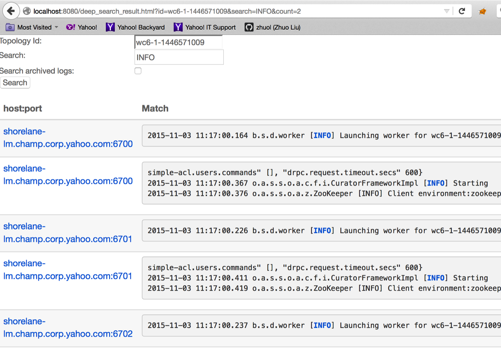

Stormのログは、すべてのデーモン（例えば、nimbus, supervisor, logviewer, drpc, ui, pacemaker）およびトポロジのワーカーの状態、操作、エラーメッセージ、およびデバッグ情報を追跡するために不可欠です。
すべてのデーモン・ログは${storm.log.dir}ディレクトリーの下に置かれ、管理者はシステムプロパティまたはクラスター設定で設定できます。デフォルトでは、$ {storm.log.dir}は${storm.home}/logsを指しています。
すべてのワーカーのログは、${workers-artifacts}/${topologyId}/${port}/worker.logなど、階層的にworkers-artifactsディレクトリの下に置かれます。ユーザーは変数 "storm.workers.artifacts.dir"を設定することによってworkers-artifactsディレクトリを設定できます。デフォルトでは、workers-artifactsディレクトリは${storm.log.dir}/logs/workers-artifactsにあります。
デーモンとワーカーのログは、認証されたユーザーのみStorm UIを通じて参照およびダウンロードすることができます。
Stormのデバッグを改善するために、ログ検索機能を提供しています。 ログ検索機能は、特定のログファイルまたはすべてのトポロジのログファイルの検索をサポートします。
ログファイル内の文字列検索:このページでは、特定のワーカーログ内の特定の文字列、たとえば「Exception」を検索できます。この検索は、通常のテキストログファイルまたはロールされているzipのログファイルの両方で行われます。結果には、オフセットならびに一致した行が表示されます。
トポロジ内の検索：UIページの右上隅にある拡大レンズのアイコンをクリックすると、特定のトポロジーに対する文字列検索もできます。つまり、UIはすべてのsupervisorを分散方式で検索し、このトポロジにおけるすべてのログで一致する文字列を検索しようとします。検索は、"Search archived logs:"チェックボックスをオンまたはオフにすることで、通常のテキストログファイルまたはロールされているzipのログファイルのいずれかで行われます。次に、一致した結果をURLのリンクとともにUIに表示して、各supervisorの特定のログにユーザを誘導することができます。この強力な機能は、このトポロジを実行している特定の問題のあるsupervisorをユーザが見つけるのに非常に役立ちます。
